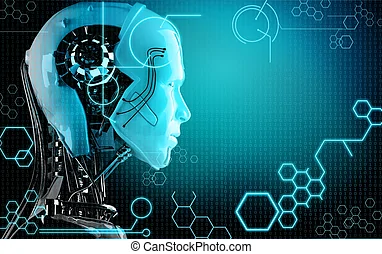
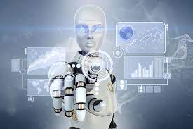
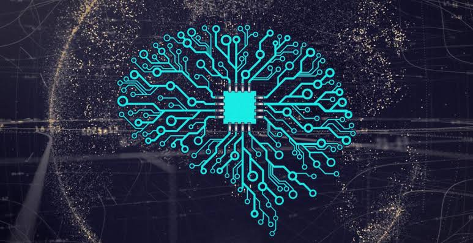
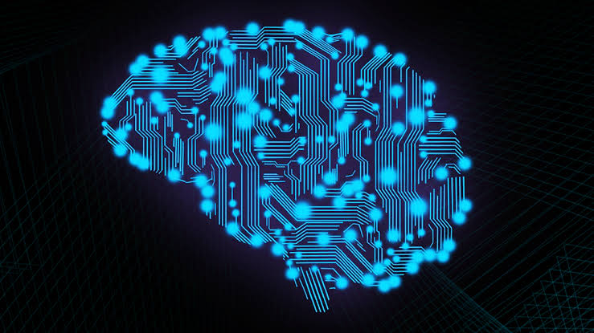
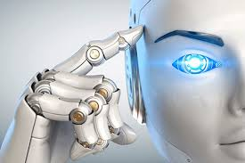

IA
NEURAL
IoT
CELEBRAL
CHIP
Conceitos de robôs
Alive
A evolução da tecnologia na sociedade contemporânea acontece com uma rapidez assustadora. Uma das principais áreas em que esse avanço ocorre é na robótica.

Robot
A ideia de um componente mecânico-eletrônico capaz de ajudar seres humanos em trabalhos árduos data de centenas e centenas de anos atrás, porém a concepção efetiva de um robô automático aconteceu apenas século passado no âmbito industrial.
Robotica
Robótica, assim como o nome sugere, é a ciência e o estudo de robôs. O termo robô é originário da palavra checa robota, que significa “trabalho forçado, servidão”, e tal termo foi utilizado pela primeira vez em 1921 pelo escritor checo Karel Capek (1890-1938).
Conceito
Há uma grande diferença entre máquinas comuns e robôs. Para ser classificado como um robô, é necessário ser composto por três elementos básicos: sensores, software e manipuladores.

Inteligencia
Programação é o processo de escrita, teste e manutenção de um programa de computador. Essencialmente, é um conjunto de instruções escritas pelo programador que o computador ou a máquina segue.
Avanços da Robótica

Robo Historia
Já o primeiro robô humanoide foi criado um pouco antes, em 1937, pela Westinghouse Eletric Corporation, em Ohio. Seu nome era Elektro, tinha 2,1 metros de altura e pesava 120,2 kg. .

Aplicações
Depois que o robô recebe as informações de entrada dos sensores e toma as decisões do que fazer em seguida através do software, é necessário que ele atue, e para isso, temos os manipuladores, que, basicamente, colocam em prática os comandos dados pelo programa desenvolvido dentro do robô.
Revolução
A evolução da tecnologia utilizada em robôs cresce exponencialmente, quanto mais nós avançamos na capacidade intelectual dos robôs, mais possibilidades criamos para resoluções de problemas que nunca imaginamos solucionar.

Automação Industrial
Há cada vez mais consenso entre os especialistas que a substituição laboral humana pela robótica é inevitável. De acordo com um recente estudo feito pela IBM Institute for Business Values, mais de 120 milhões de trabalhadores pelo mundo deverão ser retreinados apenas nos próximos anos devido a realocação causada por robôs e por inteligências artificiais.
Inteligência Artificial
A.I. é um ramo da ciência da computação que lida com a simulação de comportamentos inteligentes em computadores. Nesta área, o computador não apenas segue uma sequência de comandos pré-determinados para realizar uma tarefa, mas sim aprende com interações e modifica seu comportamento com o tempo.
Aplicações
Industrial
Provavelmente, a área industrial acumula o maior investimento em robótica dentre as outras. Essa área deu origem aos robôs autômatos que conhecemos, portanto, faz sentido que ela obtenha a maior concentração de tecnologia robótica.
Médica
Uma das áreas mais importantes em que a robótica pode atuar é a médica. A utilização de uma tecnologia precisa e livre de erros humanos dentro da medicina sempre foi almejada, porém muito difícil de ser criada.
Humanoide
Robôs humanoides podem ser utilizados para pesquisa e exploração espacial, assistência pessoal e cuidados psicológicos, educação e entretenimento, busca e resgate, trabalhos industriais e manutenções, relações públicas e cuidados médicos.
Espacial
A área espacial é outra que se utiliza largamente de atividade robótica em suas missões. A NASA, por exemplo, utiliza robôs de diversas maneiras no espaço. Uma delas é a utilização de braços robóticos com o objetivo de mover grandes objetos fora da atmosfera.
Educacional
A robótica como forma de auxílio na educação é um dos grandes debates abertos no Brasil. Em países de primeiro mundo esse assunto já foi superado, pois a maioria da população já tem acesso a recursos como computador, internet e programas educativos na escola e até na própria residência.
Teoria Neural
Redes Neurais
O uso da Inteligência Artificial considera enfoques teóricos e empíricos, criando perspectivas tanto de ações lógicas, incluindo capacidade de dedução, quanto de sistemas que pensem como seres humanos, podendo aprender com base em experiências.
Rede Neurais Artificiais
As Redes Neurais Artificiais (RNA) são métodos de Deep Learning com capacidade de reconhecimento de padrões complexos ou numerosos e com função de aprendizado dentro da própria rede. As RNA baseiam-se na arquitetura dos neurônios humanos e destinam-se a reproduzir o aprendizado por meio do desenvolvimento de sistemas que aprendem com exemplos de treinamento.
Neurônio
O primeiro tipo de neurônio usado em uma RNA foi inspirado em um neurônio humano, criado por Frank Rosenblatt em 1958. Chamado de Perceptron, ele possui arquitetura simples e tornou-se obsoleto para a resolução dos problemas complexos pela sua inflexibilidade e falta de estabilidade de sua função de ativação, que é a função que decide se um neurônio será ativado ou não.
Redes Neurais
Perceptron (P), Feed Forward Network(FFN), Radial Basis Network(RBF), Recurrent Neural Network(RNN), Long short-term memory(LSTM), Gated recurrent network(GRU), Auto-encoder(AE), Variational auto-encoder(VAE), Denoising auto-encoder(DAE), Sparse auto-encoder(SAE).
Redes Neurais Profundas
Redes neurais mais profundas são modelos com mais camadas ocultas e isso significa mais neurônios e mais conexões entre os neurônios. Elas permitem a captura e exploração de dados não estruturados, tais como: imagens, vídeos, sons, etc. Uma rede neural profunda pode reconhecer padrões escondidos e fazer correlações em dados brutos, aprendendo e melhorando continuamente.